Paris 9e
Un duplex qui respire comme une maison. Le séjour s'ouvre sur deux niveaux, la lumière traverse librement — quelque chose ici ressemble à une déclaration.
Dans le 9e arrondissement de Paris, ce duplex de 180 m² a été entièrement repensé par John Rozenblum, designer d'intérieur. L'enjeu : transformer un espace sur deux niveaux en un intérieur fluide, où la lumière circule librement et où la verticalité devient un atout architectural. L'aménagement s'articule autour d'un séjour double-hauteur, d'un mobilier sur mesure dessiné en cohérence avec l'architecture et d'une palette de matériaux épurée. Une rénovation complète à Paris qui illustre la signature JR Design : l'exigence au service de la vie.
Le 9e arrondissement, entre l'Opéra et la Trinité, aligne des immeubles dont les derniers étages ont été repris au fil du temps : combles reconvertis, escaliers intérieurs ajoutés, toitures percées. Sur 180 m² répartis sur deux niveaux, l'enjeu n'était pas d'agrandir mais de relier — faire qu'un escalier cesse d'être une coupure et devienne une articulation.
L'étage de réception réunit un double salon, une salle à manger sous coupole et une cuisine ouverte en noyer. La cheminée de marbre rouge a été gardée comme point fixe, et la table ronde placée dans son axe. Au-dessus du salon, une suspension circulaire dessinée pour l'espace tient lieu de plafond lumineux et donne au volume son centre. Le parquet et les moulures d'origine courent sans interruption d'une pièce à l'autre.
À l'étage, les chambres s'installent sous rampant. Le chêne clair remplace le noyer, les têtes de lit deviennent des panneaux pleine largeur intégrant niches et liseuses, et chaque chambre reçoit une couleur propre — vert olive, terracotta, bleu nuit — pour que les enfants et les invités ne dorment pas dans la même pièce répétée. Les fenêtres de toit sont traitées comme des sources, jamais comme des ouvertures accessoires.
Une terrasse en bois ouvre sur les toits de zinc. Elle est meublée avec la même retenue que l'intérieur — une table, deux fauteuils, un bardage bois qui masque les acrotères — et vaut moins pour sa surface que pour ce qu'elle cadre. C'est le seul endroit du duplex où l'on voit Paris de haut, et le projet ne lui demande rien d'autre.
Duplex Madeleine rejoint les projets à niveaux multiples conduits par John Rozenblum, aux côtés du Triplex avec Spa.
Ce projet fait partie des réalisations de design d'intérieur à Paris de John Rozenblum. Pour discuter d'un projet similaire ou d'une rénovation sur mesure, prenez contact.
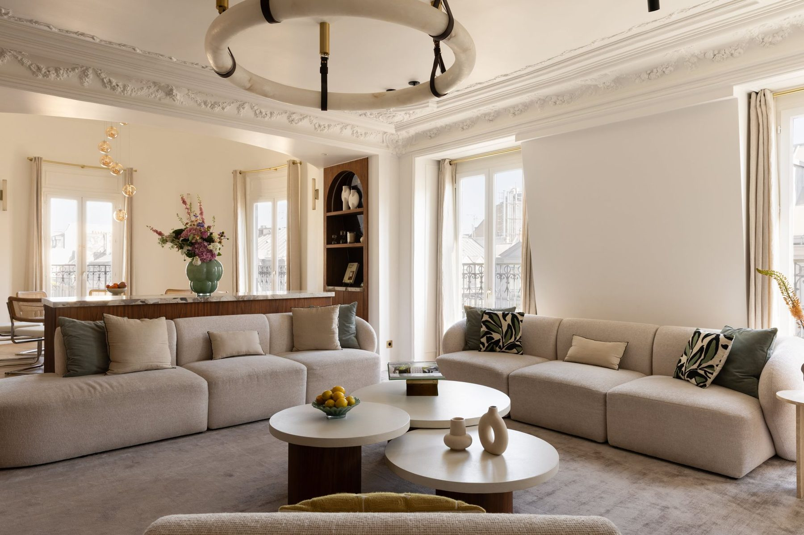
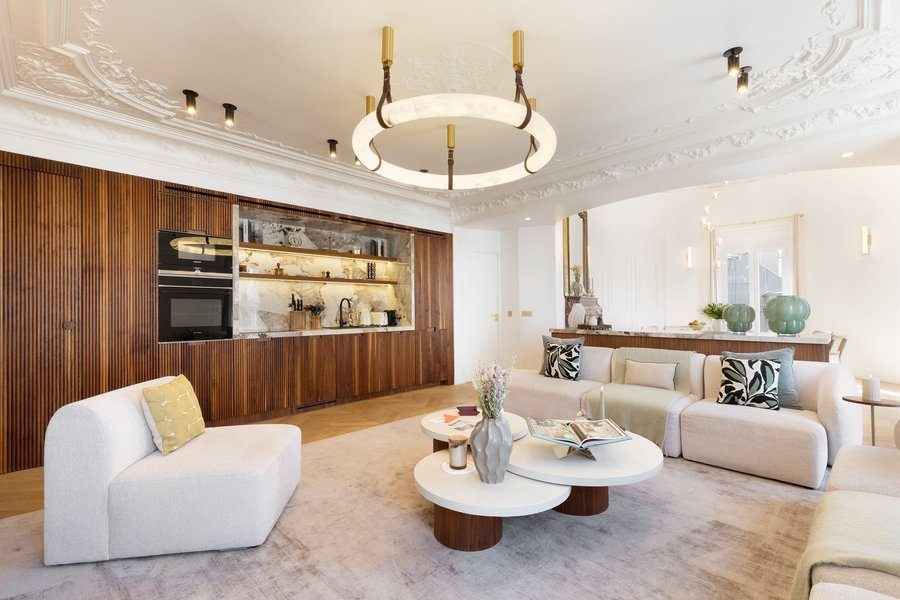
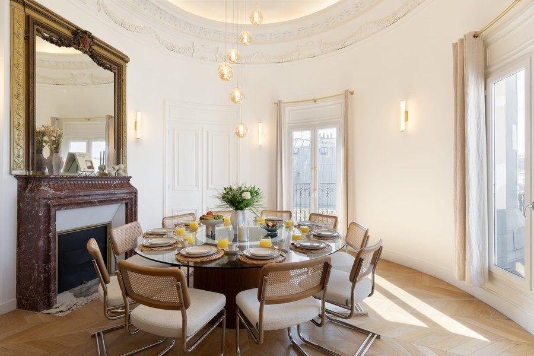
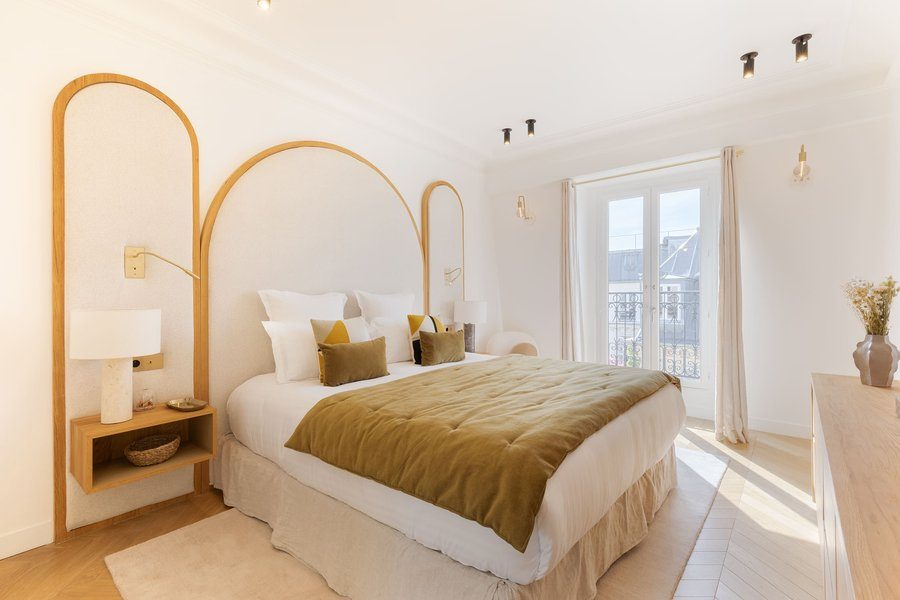
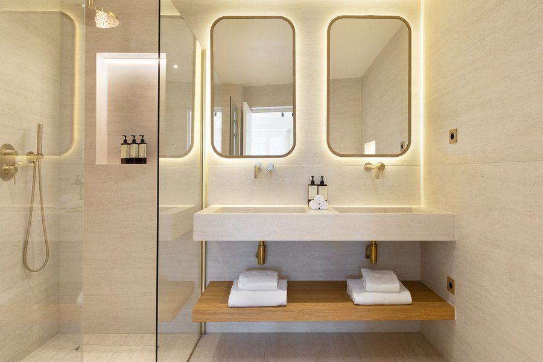
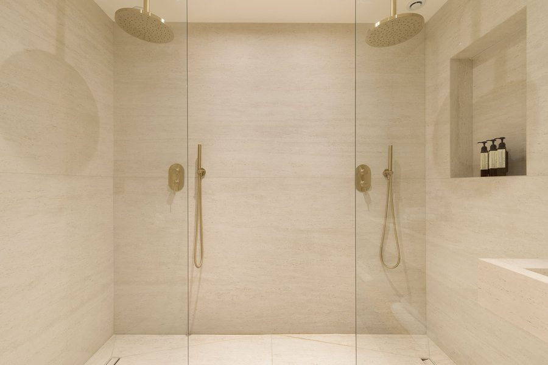
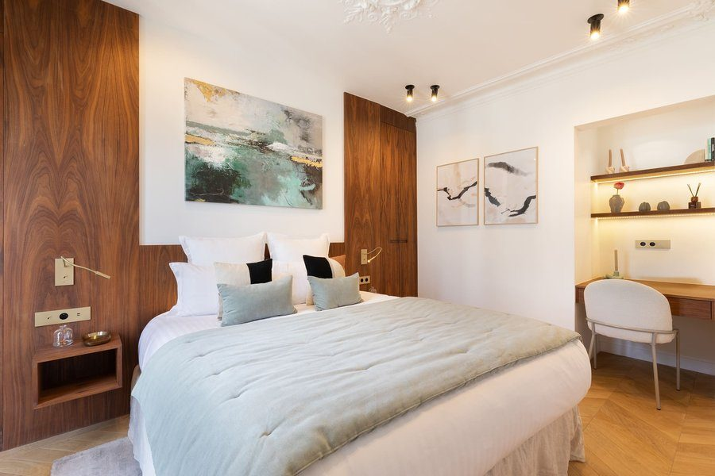
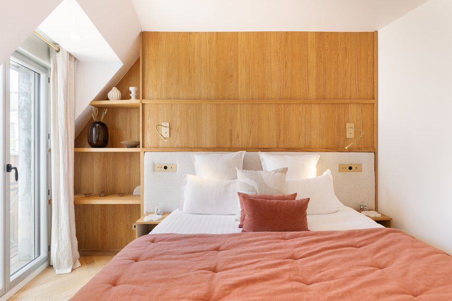
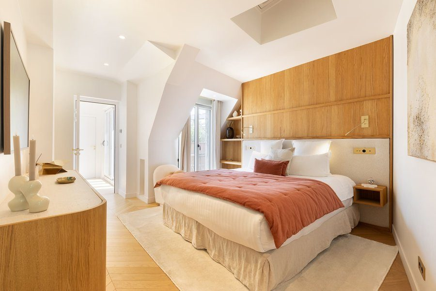
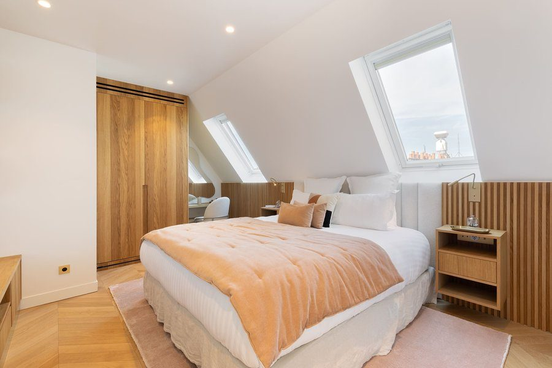
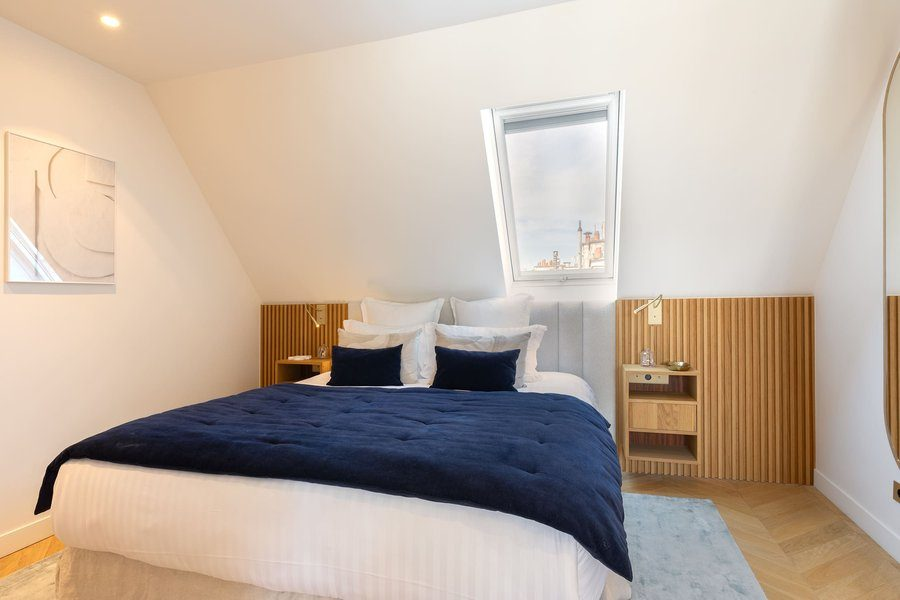
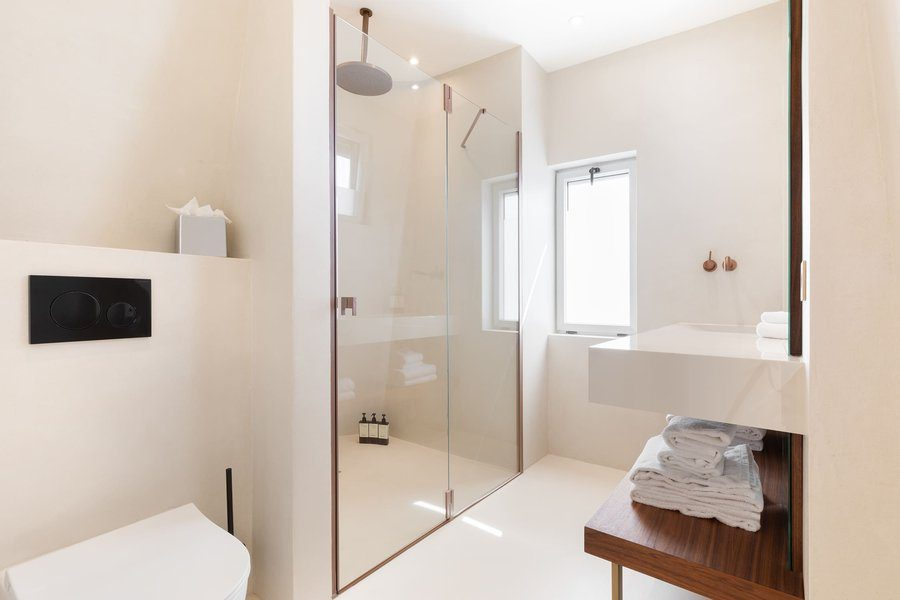
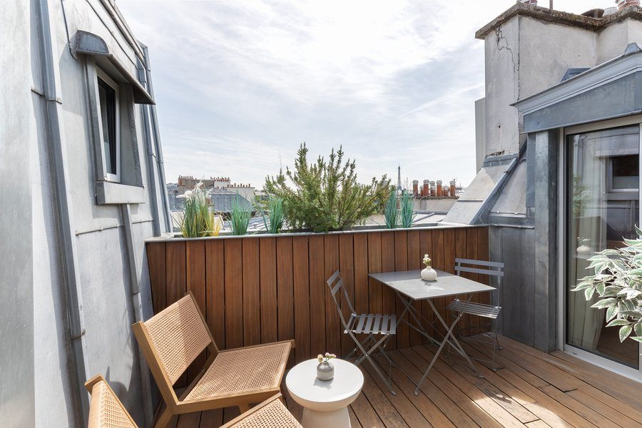
Un projet ?
Chaque projet commence par une conversation. Partagez votre vision — je m'occupe du reste.
Prendre contact